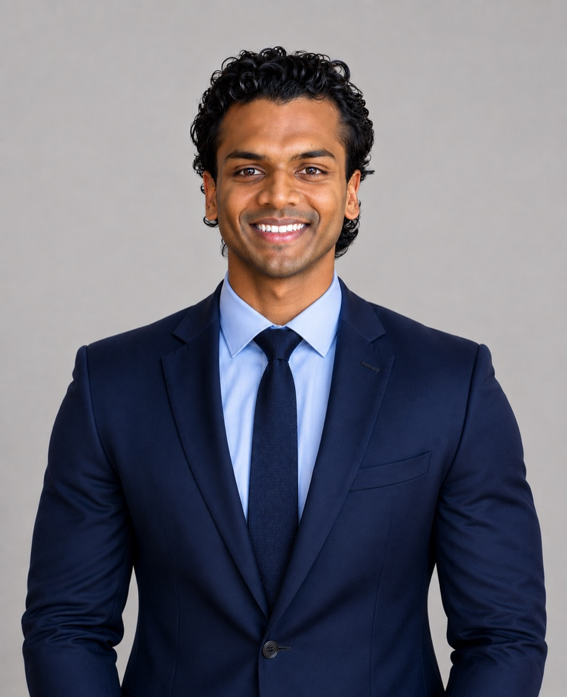

Program Leadership · Delivery Oversight · Executive Advisory
I lead complex technical programs for strategic federal and defense accounts, from first requirement to final delivery.
As lead technical advisor, I drive requirements, oversee workstreams and implementation partners, and keep senior leadership aligned on progress and risk. 12+ years delivering into classified, air-gapped, and IL4–IL6 environments means I know what the plan actually takes.
Cross-organization delivery
Coordinate engineering teams, customer stakeholders, and implementation partners across a five-organization enterprise account.
Requirements & strategy
Translate mission and compliance needs (DISA STIG, NIST) into clear requirements and adoption strategies that grew platform consumption.
Modernization roadmaps
Multi-year plans that sequence infrastructure refresh, tooling, and migration around dependencies and end-of-support deadlines.
Executive advisory
Brief executive leadership on milestones, risk, and the decisions that unblock delivery.
Operating rhythm
One clear view of workstreams, owners, risks, and status, backed by RACI, tiered support models, and regular reporting.
Repeatable processes
Turn recurring work into reusable tooling and automated runbooks that peer architects adopted across accounts.
Experience
The journey so far
B.S., Business Administration & Information Systems
Both halves of the job: how the technology works and why the business funds it.
Virtualization Team Lead
Technical lead for the organization, directing a team of engineers and advising leadership on cost, staffing, and schedule.
Senior Consultant
On-site technical subject matter expert for federal enterprise mission customers, leading readiness, continuity, and disaster recovery designs.
Senior Architect
Lead technical advisor on strategic federal and defense accounts.
MBA
Building the business foundation for program leadership: finance, strategy, and operations.
Where I'm headed
Helping federal agencies put AI to work on their most critical problems, including the ones no one has solved yet.
Responsible AI adoption in government needs what I already do every day: clear requirements, secure and compliant delivery, and leaders who understand what they're deciding.